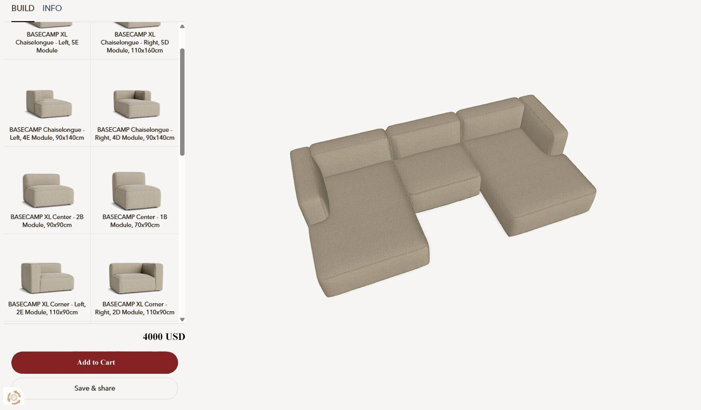
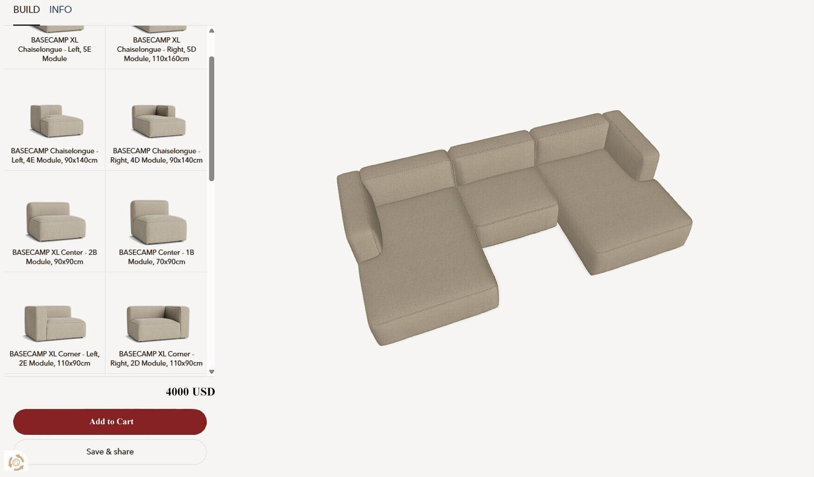

Design Tool
Use our design tool to create custom furniture pieces that fit your style and space. Choose from a variety of materials, colors, and designs to bring your vision to life.
Use our design tool to create custom furniture pieces that fit your style and space. Choose from a variety of materials, colors, and designs to bring your vision to life.
